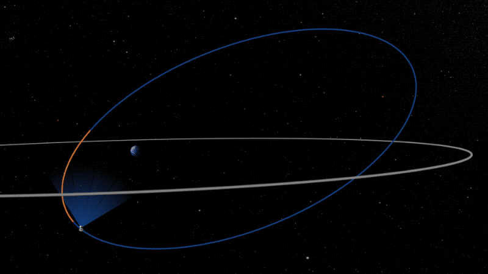

Geocentric Orbit
The clue's in the name on this one - it means an orbit with the Earth at the center. You might choose to stick close to our planet so that your telescope will be easier to repair and enhance. This means you can keep your telescope going for a long time, plus there's less pressure to get everything perfect!
Left: Credit to NASA's Goddard Space Flight Center
However you will have to deal with the Earth passing in front of your view for part of the orbit, which limits what you can see. For example, the gif shows the orbital path of the TESS telescope. This specific path allows us to survey as much of the sky as possible, which is great. As the telescope approaches its closest point to Earth, in orange, data is sent down to the ground. If you pay close attention to the field of view around this point, you can see the Earth will pass into it. This can block off light from certain stars.
You may also have to compete for space (if you pardon the pun), since you will be joining both satallites and a surprising amount of space junk!
Back